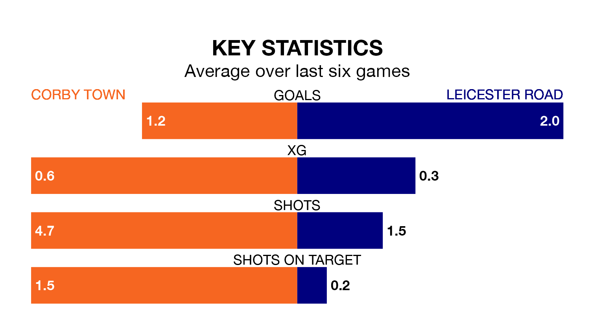

Corby Town face a challenge to maintain their high-scoring form at home against a tight Leicester Road defence on Saturday.
With 50 goals in 26 games, Corby are the fourth-highest scorers in Northern Premier League Division One Midlands ahead of the 3pm kick-off at Steel Park.
They face a Leicester Road side who have scored 43 in 25 matches, but conceded only 30 goals, putting them joint-fourth among the league's tightest defences – only Spalding United, Harborough Town and Anstey Nomads have conceded fewer goals.
Leicester Road are fourth in the table after 25 games, of which they have won 14 and drawn seven, earning 49 points.
Corby are eight places behind the visitors in 12th, with eight wins and eight draws putting them on 32 points.
Town are in mixed form in Northern Premier League Division One Midlands, with one win and four draws from their last six games.
With five wins and one loss over that period, Leicester Road's form is much better – they have taken 15 points from 18, compared to the home side's seven.
In the last three years, Corby and Leicester Road have played each other on three occasions. Corby won two of them and Leicester Road one.
Their last meeting was on September 16, when Leicester Road won 3-2 at home.
Corby's last match was on January 27, a 2-1 loss against Spalding United.
Leicester Road beat Boldmere St. Michaels 2-0 last time out, also on January 27.
Updated: 13:20 (UTC), 29/01/24